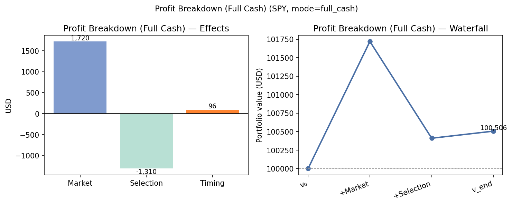
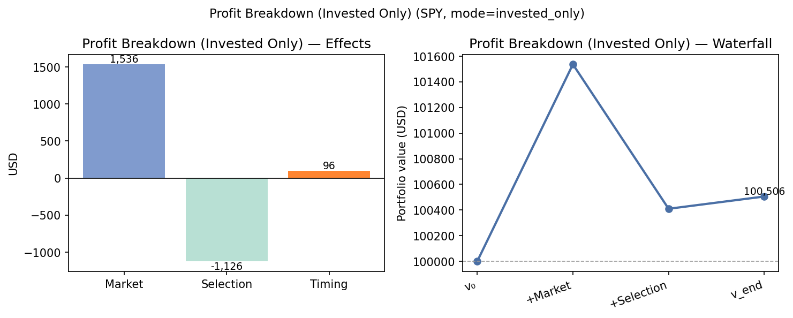
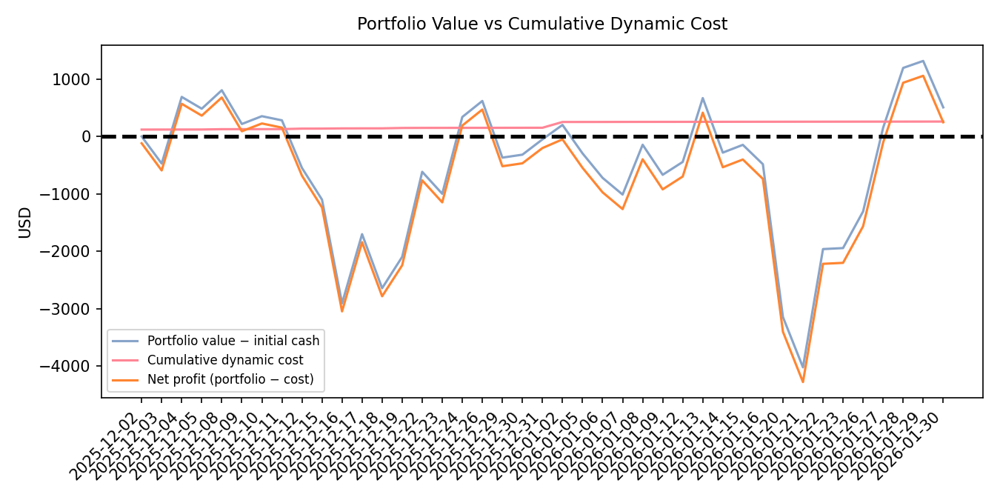
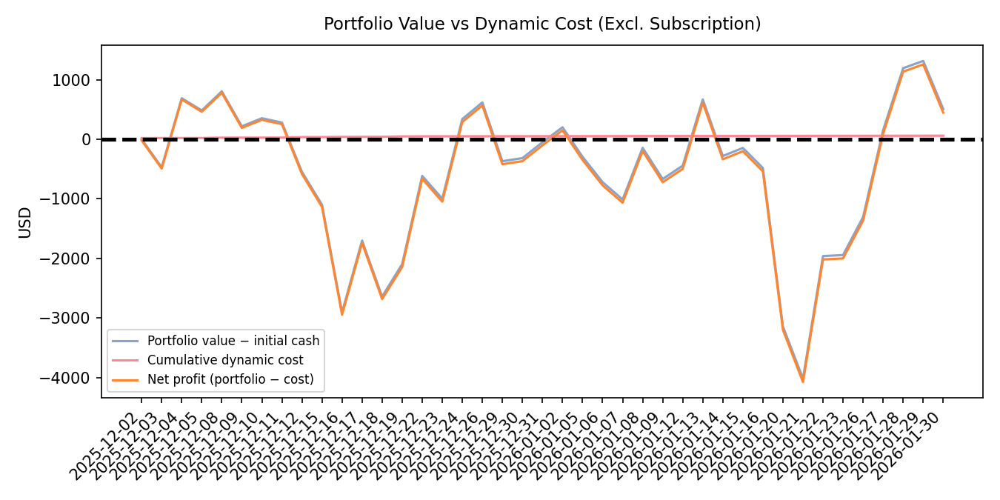

Quick Wins - Trim prompt size and caching: reduce avg_daily_input_tokens by caching recent state and reusing embeddings where possible (immediate token-cost savings). (Maps to Lever 4.) - Switch to limit/marketable-limit orders and simple pre-checks to cut slippage and opportunity cost while infra improvements are implemented. (Lever 4.) - Pause or renegotiate the data subscription if usage is low relative to benefit, or shift to a lower-cost plan while testing model changes. (Lever 1 / cost control.) - Introduce minimum trade-size and batching to reduce frequent tiny executions that increase slippage and token rounds. (Lever 3.)
Structural Changes - Re-architect decision pipeline for sub-second decision→order latency (persistent connections, pre-authenticated orders, colocated execution). (Lever 4 — higher implementation cost but largest ROI on execution loss.) - Retrain or replace selection model: add loss functions or risk controls explicitly targeting selection-effect reduction (e.g., penalize positions that historically caused drawdown vs benchmark). (Lever 2.) - Adopt a staged productionization plan: offline selection model experiments → shadow execution → small live A/B test with improved execution stack before full rollout. (Cross-lever: 2 + 4.) - Reconsider business economics: set a minimum AUM/starting capital threshold or fee-sharing model to amortize fixed subscription and justify token usage (Lever 1).
| Metric | Value | Why it matters |
|---|---|---|
| Initial cash | $100,000.00 | Base capital for return calculations |
| Total portfolio value (end) | $100,505.76 | Strategy final NAV (gross) |
| Gross profit | $505.76 | Absolute gross trading gain (v_end − v₀) |
| Static cost (subscription) | $200.00 | Largest single reported cost; fixed |
| Dynamic cost | $59.12 | Commission/tokens/infra — actionable |
| Total cost | $259.12 | Sum of static + dynamic; used to compute net outcome |
| Net outcome | $246.64 | Real economic profit after reported costs |
| Market effect | $1,719.91 | Market-driven gain; explains majority of gross |
| Selection effect | −$1,309.80 | Large negative driver — needs model fix |
| Timing effect | $95.65 | Active timing alpha (small positive) |
| Net timing outcome | $36.53 | Timing minus dynamic cost; small margin |
| Opportunity cost | $460.98 | Loss from decision→execution gap; actionable |
| avg_latency_per_trade_ms | 23,495.44 ms | Per-trade latency — contributes to opportunity cost |
| avg_daily_llm_latency_ms | 67,870.78 ms | Daily LLM delay and throughput constraint |
| avg_daily_input_tokens | 91,323.76 | High token consumption → dynamic cost driver |
| avg_daily_output_tokens | 3,072.05 | Output token volume (billing relevant) |
| trade_count (period) | 67 | Trading activity level (turnover) |
| cost_to_gross_profit_ratio | 0.5123 | ~51% of gross profit consumed by costs |
Notes on evidence strength
- Attribution values, costs, latency, token counts, and opportunity cost are direct from the supplied financial report and experiment summary and cited above.
- Visual inferences about the shape and fragility of the time series rely on Figures 5–6; I avoided specific intra-period drawdown claims because the available data does not include per-day drawdown tables.